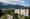

★★★★★
0 min · same building
The flagship. Renovated by Claudio Carbone; Memories is literally down the hall. The contemporary-luxe option for proximity above all.
Indicative · CHF/night
from700–1,400
Tier